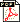

BMDFM Official Site
Download Area
 Download document "Dataflow in Practice: Transparent Dataflow Programming Model for Multicore and Many-core" (PDF size: 201KB, 26 pages)
Download document "Dataflow in Practice: Computing Recursive Fibonacci in Parallel Using Transparent Dataflow Programming Model for Multicore and Many-core" (PDF size: 151KB, 37 pages)
Download document "Dataflow in Practice: Calculating Pi Number with Chudnovsky Algorithm and GMP Library in Parallel Using Transparent Dataflow Programming Model for Multicore and Many-core" (PDF size: 246KB, 34 pages)
Download document "Dataflow in Practice: Real-Time Rendering of Game Scenes in Parallel Using Transparent Dataflow Programming Model for Multicore and Many-core" (PDF size: 200KB, 51 pages)
Download BMDFM mission statement (PDF size: 152KB, 3 pages)
Download BMDFM comprehensive manual (PDF size: 821KB, 108 pages)
Download BMDFM FAQ (PDF size: 252KB, 38 pages)
Download BMDFM list of supported platforms (PDF size: 77KB, 30 pages)
Download fully operational stable BMDFM v.5.9.9_R25_b2506 [factory package, production release] (Tarball size: 400MB, all supported platforms, dynamic linkage)
Download fully operational stable BMDFM v.5.9.9_R25_b2506 [factory package, production release] (Tarball size: 26MB, x86-64 Linux/64 platform only, dynamic linkage)
Download presentation slides "Transparent Dataflow Programming Paradigm for Multicores Inspired by Philosophical Ideas of Emergence and Synergy" (PDF size: 3.1MB, 6 pages)
Download screenshot "BMDFM Running on Linux" (JPG size: 1MB, 1 picture)
{kind=link}
Download screenshot "BMDFM Running on Windows 10" (JPG size: 1.1MB, 1 picture)
{kind=link}
Download screenshot "BMDFM Running on MacOS" (JPG size: 2.2MB, 1 picture)
{kind=link}
Download screenshot "BMDFM Running on Android" (JPG size: 0.7MB, 1 picture)
{kind=link}
Download PhD thesis "BMDFM: A Hybrid Dataflow Runtime Parallelization Environment for Shared Memory Multiprocessors" (PDF size: 1.6MB, 170 pages)